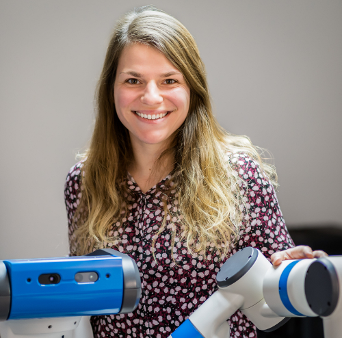
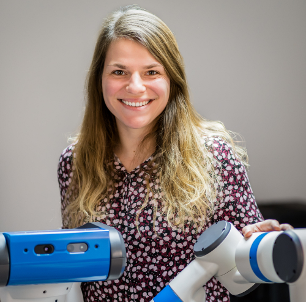

2nd RL-CONFORM Workshop, co-located with IROS'22
Reinforcement Learning meets HRI, Control, and Formal Methods
Reinforcement learning (RL) has shown remarkable achievements in applications ranging from autonomous driving, object manipulation, or beating best players in complex board-games.
However, elementary problems of RL remain open: exploratory and learned policies may cause unsafe situations, lack task-robustness, or be unstable.
By satisfactorily addressing these problems, RL research will have long-lasting impact and see breakthroughs on real physical systems and in human-centered environments.
Different communities have proposed multiple techniques to increase safety, transparency, and robustness of RL.
The aim of this multidisciplinary workshop is to bring the RL, HRI, control, and FM communities together to (1) Identify key challenges and opportunities related to safe and robust exploration, formal safety and stability guarantees of control systems, safety in physical human-robot collaborative systems; (2) Provide unique insights into how these challenges depend on the application, desired system properties, and complexity of the environment; (3) Propose new and debate existing approaches to ensure desired properties of learned policies in a wide range of domains; (4) Discuss existing and new benchmarks to accelerate safe and robust RL research; (5) Disseminate the outcomes of the workshop and publish the results as a perspectives article in one of the major robotics journals.
The themes of the workshop would comprise (but not be limited to) RL and control theory, RL and Human-Robot Interaction, RL and Formal Methods, benchmarking of RL, etc.
Tentative Program
TBD. October 22, 2021 or October 27, 2022.Invited Speakers
Georgia Chalvatzaki, TU Darmstadt, Germany.
Bradley Hayes , University of Colorado, USA.
Nils Jansen , Radboud University Nijmegen, the Netherlands.
Hadas Kress-Gazit , Cornell University, USA.
Scott Niekum , University of Texas, USA.
Fabio Ramos , University of Sydney, Australia, and NVIDIA, USA.
Benjamin Recht , UC Berkeley, USA.
Call for Papers
We invite extended abstract submissions of recent works, preliminary work with open questions is very welcome, related to the theme of the workshop. All accepted abstracts will be part of a short paper presentation session held during the workshop, where the authors will have the opportunity to present their lines of work in a 5 minutes presentation, followed by a 3-minutes live Q&A session. This is a non-archival venue: there will be no formal proceedings, but we encourage the authors to publish their extended abstracts on Arxiv (where the link will be placed on the workshop’s website). Abstracts may be submitted to other venues in the future.
Topics of interest include (but are not limited to) applications of Reinforcement Learning to:
- Formal Methods
- Control
- Human-Robot Interaction
Important details
- When: TBD, October 23 or October 27, 2022.
- Where: Hybrid event co-located with IROS 2022 in Kyoto, Japan, and over Zoom.
- Website: https://saferl-workshop.github.io/RL-CONFORM_IROS2022/
- Submission deadline: September 1, 2022 (AoE)
- Notification of acceptance: September 12, 2020 (AoE)
- Submission website: https://easychair.org/conferences/?conf=rlconform2022
- Submission format: 2-page papers/extended abstracts (plus references) of original, possibly ongoing research. Papers should be formatted in the IROS 2021 style guidelines https://www.iros2022.org/call-for-papers
Organizing Committee and Support
Program Chairs
- Christian Pek, KTH Royal Institute of Technology, Sweden.
- Alexis Linard, KTH Royal Institute of Technology, Sweden.
- Sanne van Waveren, KTH Royal Institute of Technology, Sweden.
- Hang Yin, KTH Royal Institute of Technology, Sweden.
 


Advisory Committee
- Danica Kragic Jensfelt, KTH Royal Institute of Technology, Sweden.
- Iolanda Leite, KTH Royal Institute of Technology, Sweden.
- Jana Tumova, KTH Royal Institute of Technology, Sweden.